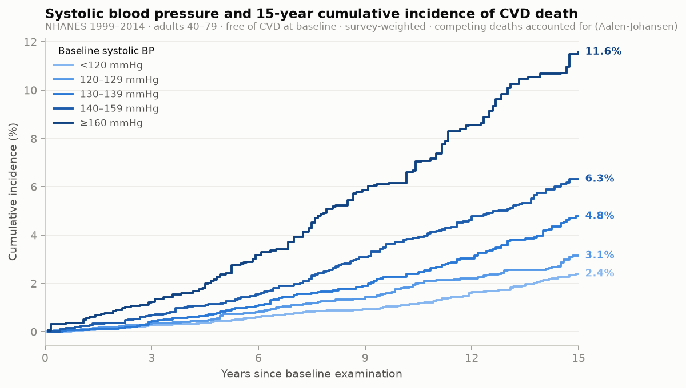
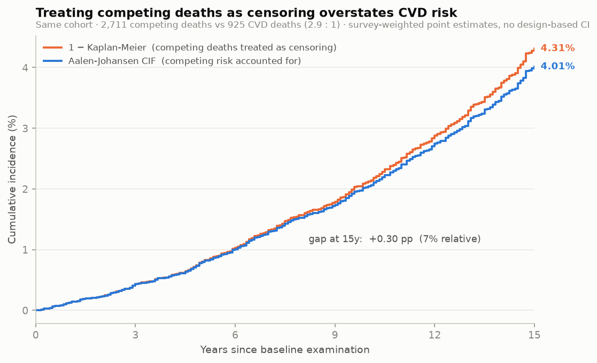
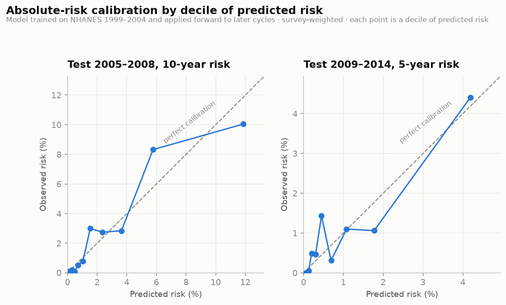

CardioTrace
A prospective cohort of adults free of cardiovascular disease at baseline, followed for up to twenty years.
Linking survey records to the National Death Index converts a series of cross-sections into a cohort: exposures measured at the examination, deaths observed for up to twenty years afterwards. This is the only one of the three analyses in which exposure precedes outcome, and therefore the only one where prediction is a defensible word.

Survival analysis does not count people; it counts person-time at risk. A participant recruited two years before follow-up ends contributes two person-years and almost no information, however large the sample they arrive in. This has a concrete consequence for the cohort's boundaries: extending it to the two most recent linkable cycles would add thousands of participants but only about 4% of events, while the cause-of-death coding used from 2015 collapses cerebrovascular deaths into a residual category — changing the definition of the outcome midway through the series. The cohort therefore stops at 2014, and stopping there yields more events than the wider alternative, not fewer.
Standard survival methods handle incomplete follow-up by censoring: a participant still alive at the end of the study is recorded as “outcome not yet observed, and still possible”. Applying the same treatment to someone who died of cancer asserts something false — that they might still die of cardiovascular disease. The estimate that results answers a hypothetical question in which no one can die of anything else.
In this cohort the distortion is not academic: competing deaths outnumber cardiovascular deaths 2.9 to 1. Absolute risk is therefore built from two cause-specific models — one for cardiovascular death, one for everything else — combined into a cumulative incidence function, so that the competing hazard remains an explicit object in the model rather than an assumption folded into a reweighting.

A participant on antihypertensive medication has a measured blood pressure that reflects the treatment, not their underlying level. The intuitive fix — add “currently treated” to the model as a covariate — is wrong for a specific reason: treatment is a collider. It is caused both by high blood pressure and by access to care, so conditioning on it opens a path between blood pressure and healthcare access that was not there before, and contaminates the estimate with confounding it did not previously have.
The exposure is instead reconstructed: treated participants have a constant added to their measured value to approximate the untreated level. The adjustment is an assumption, stated as one, and the model is refitted without it as a sensitivity check — the effect attenuates from 1.121 to 1.097 per 10 mmHg, which is the direction and roughly the magnitude the reasoning predicts.
Random cross-validation assumes observations are exchangeable. In a clustered sample they are not: participants from the same primary sampling unit share a neighbourhood and an interviewer, so a random split places correlated people on both sides of the boundary and reports optimistic performance. Splitting on survey cycle keeps clusters intact and answers the more demanding question — whether a score fitted on people surveyed in 1999–2004 still works on people surveyed a decade later.

| Test set | n | CVD deaths | Harrell’s C | Mean predicted | Mean observed |
|---|---|---|---|---|---|
| Test 2005–2008, 10-year risk | 5,163 | 217 | 0.804 | 2.82% | 2.76% |
| Test 2009–2014, 5-year risk | 8,801 | 170 | 0.797 | 0.92% | 0.89% |
| stratum_mmhg | n | cvd_deaths | cif_15y_pct |
|---|---|---|---|
| <120 | 7409 | 175 | 2.4 |
| 120–129 | 4557 | 153 | 3.14 |
| 130–139 | 3405 | 166 | 4.78 |
| 140–159 | 3196 | 232 | 6.31 |
| ≥160 | 1264 | 162 | 11.58 |
| covariate | n | log_hr | hr | hr_lo95 | hr_hi95 | p |
|---|---|---|---|---|---|---|
| systolic_bp | 17890 | 0.0115 | 1.0115 | 1.0076 | 1.0155 | 0.0 |
| age | 17890 | 0.0988 | 1.1038 | 1.0917 | 1.116 | 0.0 |
| male | 17890 | 0.6964 | 2.0065 | 1.6468 | 2.4448 | 0.0 |
| race_black | 17890 | 0.3213 | 1.3789 | 1.1514 | 1.6514 | 0.0005 |
| education | 17890 | -0.0615 | 0.9403 | 0.8728 | 1.0131 | 0.1058 |
| pir | 17890 | -0.179 | 0.8361 | 0.7818 | 0.8943 | 0.0 |
| smoke_current | 17890 | 0.8957 | 2.4491 | 1.9698 | 3.0451 | 0.0 |
| smoke_former | 17890 | 0.1702 | 1.1856 | 0.9548 | 1.4722 | 0.1233 |
| bmi | 17890 | 0.0393 | 1.0401 | 1.0255 | 1.0548 | 0.0 |
| step | n | excluded | pct_of_start | cvd_deaths |
|---|---|---|---|---|
| NHANES 1999-2014 respondents | 82091 | 0 | 100.0 | nan |
| Merged with the linked mortality file | 82091 | 0 | 100.0 | 2825.0 |
| Eligible for linkage (ELIGSTAT = 1) | 47281 | 34810 | 57.6 | 2825.0 |
| Completed the MEC examination | 45035 | 2246 | 54.9 | 2513.0 |
| Aged 40-79 | 24106 | 20929 | 29.4 | 1530.0 |
| Non-zero examination weight | 24106 | 0 | 29.4 | 1530.0 |
| Baseline CVD status known | 24103 | 3 | 29.4 | 1530.0 |
| Free of self-reported CVD at baseline | 20737 | 3366 | 25.3 | 925.0 |
| Cause of death coded for every decedent | 20736 | 1 | 25.3 | 925.0 |